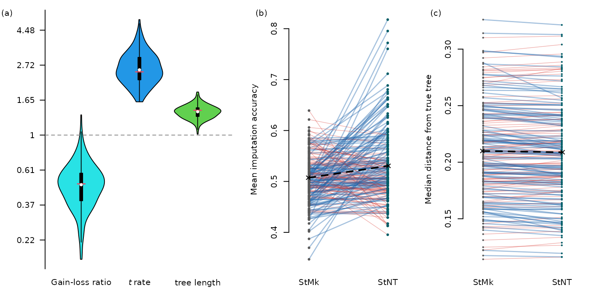
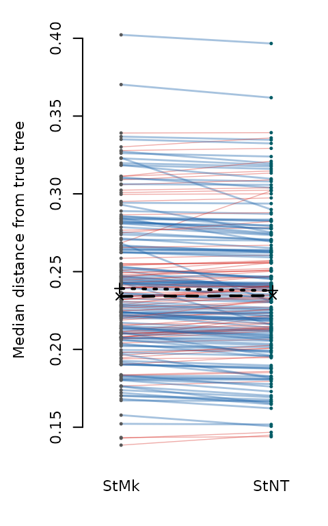

vignettes/simulations.Rmd
simulations.RmdThis vignette reproduces the three-panel simulation figure. The
underlying data were generated by
data-raw/simulations/simEmpirical.R and
data-raw/simulations/simImpute.R, then cached in
inst/extdata/figure_sim_data.RData.
library("neotrans")
load(system.file("extdata", "figure_sim_data.RData", package = "neotrans"))
OutputPlot("simulations", 7.8, 4, function() {
panel_widths <- c(1.4, 1, 1)
layout(matrix(1:3, nrow = 1), widths = panel_widths)
# Panel 1: Posterior parameter violins (from simEmpirical.R)
par(mar = c(3.5, 4.5, 1, 1))
PlotParamViolin(loss, neo, lng, true_vals = c(n, t, length))
Panel(1, 4.5)
# Panel 2: Imputation accuracy (from simImpute.R)
plot(NA, xlim = c(0.8, 2.2), ylim = range(accNT[-14], accV[-14]),
xaxt = "n", xlab = NA, ylab = "Mean imputation accuracy",
frame.plot = FALSE)
Panel(2)
axis(1, at = 1:2, labels = ModelLabelExpr(c("by_kv", "by_nt_kv")), las = 1,
lty = 0)
segments(x0 = 1, x1 = 2, y0 = accV, y1 = accNT,
col = ifelse(nt_better, "#2166ac66", "#d7302766"),
lwd = ifelse(nt_better, 1.4, 0.7))
points(rep(1, length(accV)), accV, pch = 16, cex = 0.7,
col = ModelCol("by_ki"))
points(rep(2, length(accNT)), accNT, pch = 16, cex = 0.7,
col = ModelCol("by_nt_ki"))
points(c(0.99, 2.01), c(mean(accV), mean(accNT)), pch = 4)
segments(1, mean(accV), 2, mean(accNT), lwd = 2, lty = "dashed")
# Panel 3: Tree distance (from simImpute.R)
stillNull <- vapply(ntErr, is.null, logical(1)) |
vapply(spErr, is.null, logical(1))
ntMeds <- vapply(ntErr[!stillNull], median, numeric(1))
spMeds <- vapply(spErr[!stillNull], median, numeric(1))
nt_better_tree <- ntMeds < spMeds
plot(NA, xlim = c(0.8, 2.2), ylim = range(ntMeds[-71], spMeds[-71]),
xaxt = "n", xlab = NA, ylab = "Median distance from true tree",
frame.plot = FALSE)
Panel(3)
axis(1, at = 1:2, labels = ModelLabelExpr(c("by_kv", "by_nt_kv")), las = 1,
lty = 0)
segments(x0 = 1, x1 = 2, y0 = spMeds, y1 = ntMeds,
col = ifelse(nt_better_tree, "#2166ac66", "#d7302766"),
lwd = ifelse(nt_better_tree, 1.4, 0.7))
points(rep(1, length(spMeds)), spMeds, pch = 16, cex = 0.5,
col = ModelCol("by_ki"))
points(rep(2, length(ntMeds)), ntMeds, pch = 16, cex = 0.5,
col = ModelCol("by_nt_ki"))
points(c(0.99, 2.01), c(mean(spMeds), mean(ntMeds)), pch = 4)
segments(1, mean(spMeds), 2, mean(ntMeds), lwd = 2, lty = "dashed")
wilcox.test(spMeds, ntMeds, paired = TRUE, conf.int = TRUE)
})
##
## Wilcoxon signed rank test with continuity correction
##
## data: spMeds and ntMeds
## V = 12046, p-value = 0.0149
## alternative hypothesis: true location shift is not equal to 0
## 95 percent confidence interval:
## 0.0001810618 0.0015658744
## sample estimates:
## (pseudo)median
## 0.0008607131Verify that imputed reconstructions behave as complete datasets.
par(mar = c(3.5, 4.5, 1, 1), cex = 0.7)
nti_better_tree <- ntiMeds < spiMeds
plot(NA, xlim = c(0.8, 2.2), ylim = range(ntiMeds, spiMeds),
xaxt = "n", xlab = NA, ylab = "Median distance from true tree",
frame.plot = FALSE)
axis(1, at = 1:2, labels = ModelLabelExpr(c("by_kv", "by_nt_kv")), las = 1,
lty = 0)
segments(x0 = 1, x1 = 2, y0 = spiMeds, y1 = ntiMeds,
col = ifelse(nti_better_tree, "#2166ac66", "#d7302766"),
lwd = ifelse(nti_better_tree, 1.4, 0.7))
points(rep(1, length(spiMeds)), spiMeds, pch = 16, cex = 0.5,
col = ModelCol("by_ki"))
points(rep(2, length(ntiMeds)), ntiMeds, pch = 16, cex = 0.5,
col = ModelCol("by_nt_ki"))
points(c(0.99, 2.01), c(median(spiMeds), median(ntiMeds)), pch = 4)
segments(1, median(spiMeds), 2, median(ntiMeds), lwd = 2, lty = "dashed")
points(c(0.99, 2.01), c(mean(spiMeds), mean(ntiMeds)), pch = 3)
segments(1, mean(spiMeds), 2, mean(ntiMeds), lwd = 2, lty = "dotted")
wilcox.test(spiMeds, ntiMeds, paired = TRUE, conf.int = TRUE)##
## Wilcoxon signed rank test with continuity correction
##
## data: spiMeds and ntiMeds
## V = 12422, p-value = 0.003808
## alternative hypothesis: true location shift is not equal to 0
## 95 percent confidence interval:
## 0.0003439676 0.0018205248
## sample estimates:
## (pseudo)median
## 0.001096623